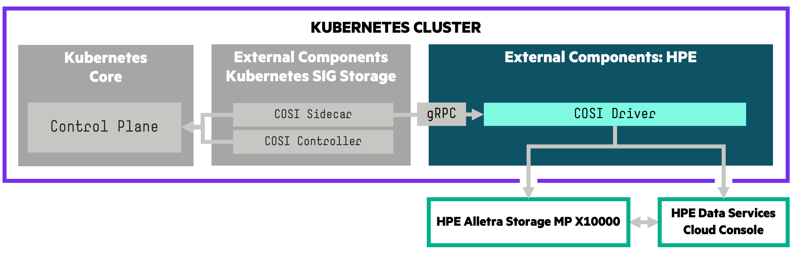

Introduction¶
A Container Object Storage Interface (COSI) Driver for HPE Alletra Storage MP X10000. The HPE COSI Driver for Kubernetes allows you to use the HPE Object Storage Provider (OSP) to perform bucket management operations on storage resources. The COSI architecture allows you to integrate HPE Alletra Storage MP X10000 Object Storage with a COSI-compatible containerized application running on the Kubernetes cluster. The COSI driver follows the gRPC specification provided by Kubernetes.

Tip
The HPE COSI Driver for Kubernetes is vendor-specific and works only with the HPE Alletra Storage MP X10000 OSP.
Table of Contents¶
Features and Capabilities¶
Below is the official table for COSI features that HPE has officially tested and validated against the platform matrix.
| Feature | K8s maturity | Since K8s version | HPE COSI Driver |
|---|---|---|---|
| Bucket Creation | Alpha | 1.25 | 1.0.0 |
| Bucket Deletion | Alpha | 1.25 | 1.0.0 |
| Bucket Tagging | Alpha | 1.25 | 1.0.0 |
| Granting Bucket Access | Alpha | 1.25 | 1.0.0 |
| Revoking Bucket Access | Alpha | 1.25 | 1.0.0 |
Refer to the official table of feature gates in the Kubernetes docs to determine the availability of alpha features. File any issues, questions or feature requests here. You may also join the HPE Slack community to chat with people close to this project on the #Alletra and #Kubernetes channels. Sign up at slack.hpedev.io and log in at hpedev.slack.com.
Tip
Familiarize yourself with the basic requirements below for running the COSI driver on your Kubernetes cluster before you install it. HPE strongly recommends you install the COSI driver with a Helm chart.
Compatibility and Support¶
HPE has tested the following combinations and included them as part of the official support services for the first COSI driver release.
HPE COSI Driver for Kubernetes v1.0.0¶
Release highlights:
- Support for Kubernetes v1.25 to v1.31.
- Implementation of bucket creation, configuration (bucket tagging), lifecycle and access management.
- A log collector script that can be used to collect logs from any node.
| Kubernetes | v1.25-v1.31 |
|---|---|
| Helm Chart | v1.0.0 on ArtifactHub |
| Platforms | HPE Alletra Storage MP X10000 |
| HPE Alletra Storage MP X10000 OS | R1 |
| Protocols | S3 |
| Release notes | v1.0.0 on GitHub |
Release Archive¶
HPE does not currently have any archived releases of the HPE COSI Driver.
Known Limitations¶
- The HPE COSI driver can be deployed only in the
defaultnamespace due to a bug in creating events in the COSI API objects when deployed in non-default namespaces. - Creating
BucketClaimorBucketAccessobjects in parallel can cause failures in the COSI driver. A bug has been filed to address this issue. - A warning event is created in the
BucketorBucketAccessresources when an error occurs, and has a life-span of one hour. During this period, if the error is resolved the Status will showBucket Ready: trueorAccess Granted: truein theBucketorBucketAccessrespectively, but the warning event will persist till an hour lapses. A bug has been raised to resolve this ambiguity. - Recreation of
BucketClaimorBucketAccessobjects doesn't work intermittently, as gRPC request is not sent to the COSI driver. This pull request will address the issue.